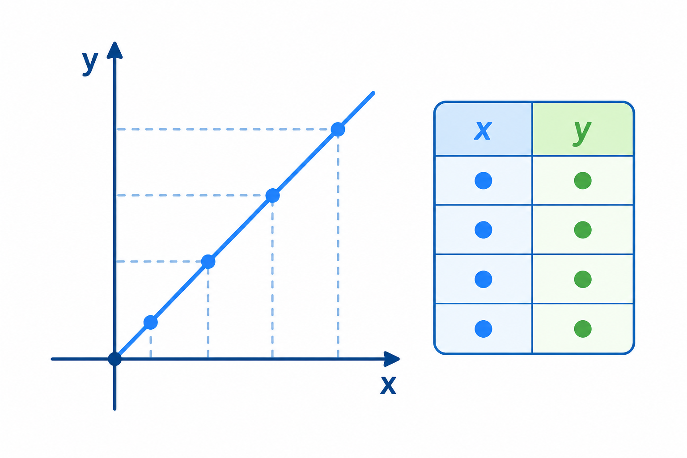

1
proporcjonalność prosta
пряма пропорційність

📘 Co to jest? Що це?
Proporcjonalność prosta: gdy jedna wielkość rośnie, druga rośnie tyle samo „razy”.
Пряма пропорційність: коли одна величина зростає, друга зростає стільки само «разів».
⭐ Zapamiętaj Запам'ятай
y = k·x
y = k·x. Відношення y/x стале.
⚠ Nie pomyl Не плутай
- nieskończona w obie stronyodcinek
- półprostapółprosta: początek + jedna strona
✅ Przykłady Приклади
- 2 kg → 10 zł, 5 kg → ?
- więcej → więcej
- v stałe: s i t
- 3 cuk. = 6 zł, 7 = ?
- tabela rośnie równo